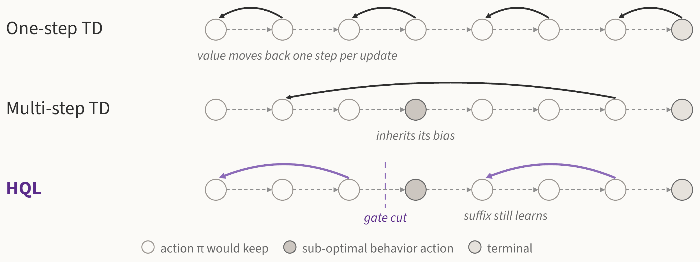
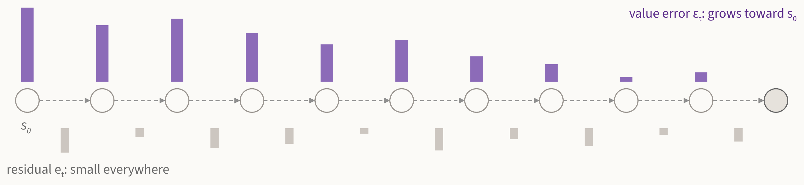
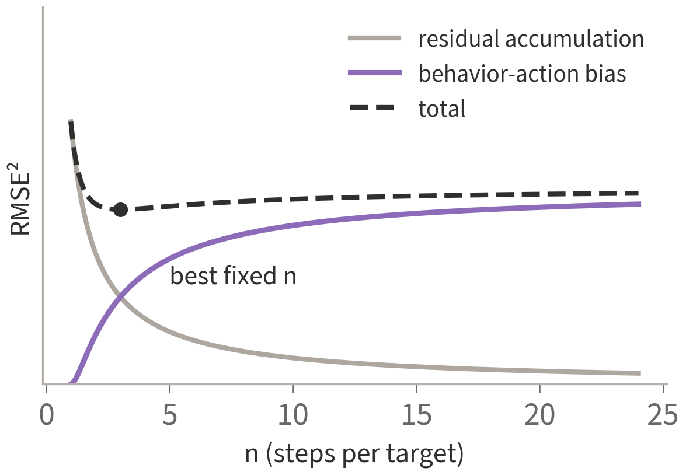
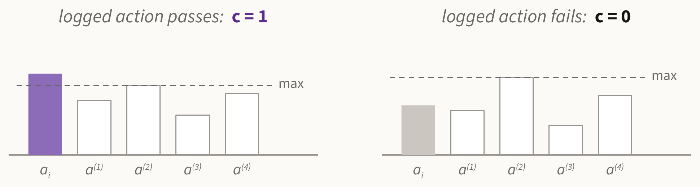
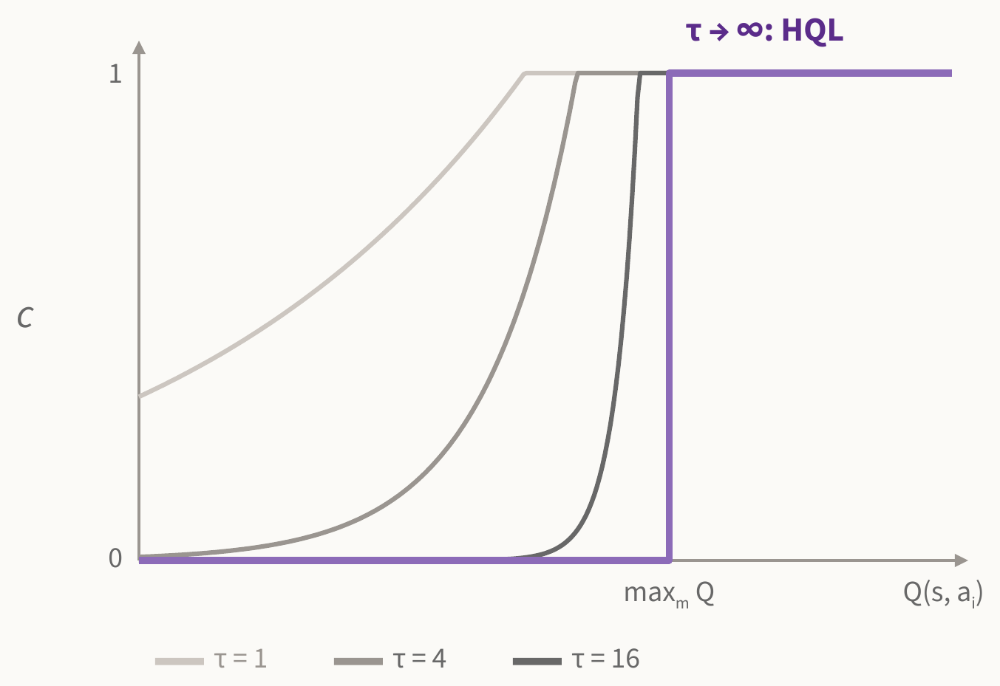
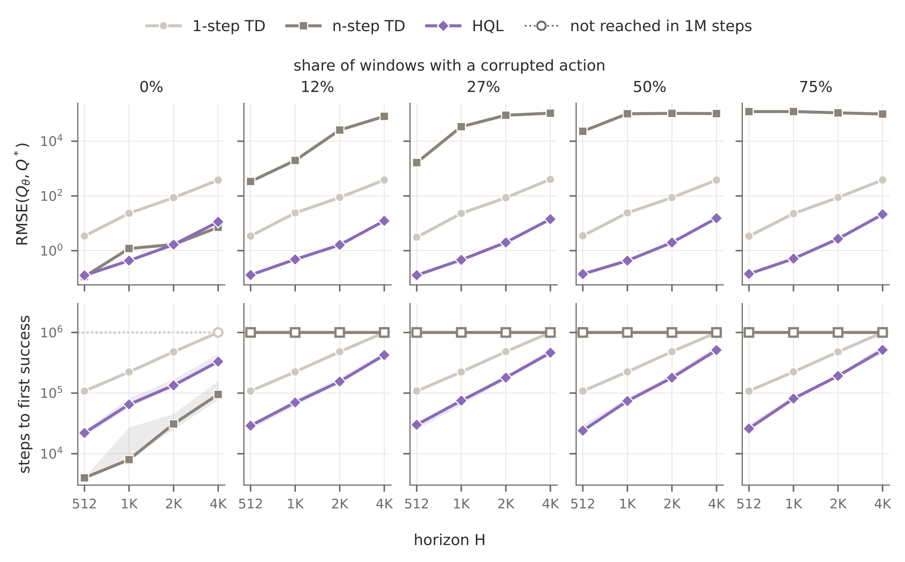
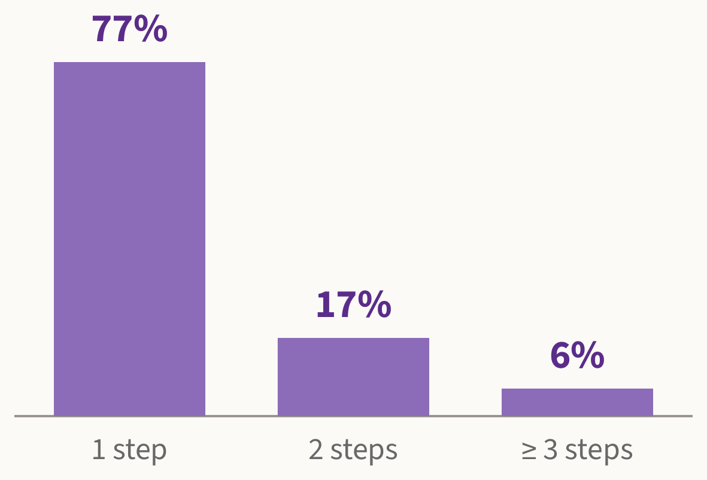
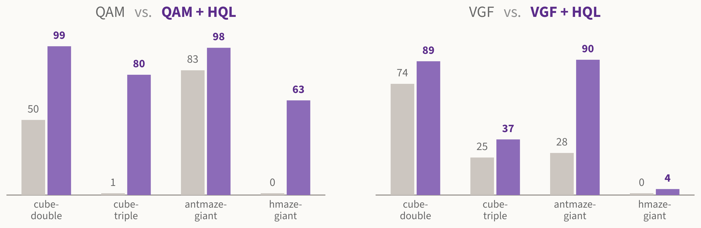

Horizon-Scalable Q-Learning
The University of Texas at Austin/preprint
HQL extends a TD target through a logged action only if it beats the best of N policy samples. Value travels far back along the trajectory without the bias of sub-optimal actions, and no action density is ever evaluated.

Errors add up along the horizon
Most off-policy actor-critic methods learn the critic with one-step TD backups. A one-step target bootstraps after a single logged transition: it is robust to off-policy data, but it moves value back by only one transition per update. Writing \(e_t = Q_t - r_t - Q_{t+1}\) for the one-step Bellman residual and \(\epsilon_t = Q_t - Q^\pi_t\) for the value error, the recursion telescopes along the trajectory:
$$\epsilon_t \;=\; \sum_{\tau=t}^{H-1} e_\tau .$$In other words, the value error at a state is exactly the sum of the residuals downstream, for any critic at any point in training.

If the residuals behave like weakly correlated noise, the start-state error grows as \(\sqrt{H}\):
$$\mathrm{RMSE}(\epsilon_0) \;=\; \sqrt{H\cdot L_{\mathrm{TD}}} .$$A small TD loss does not mean a small value error on long horizons.
Multi-step TD trades one error for another
Multi-step returns and action chunking shorten the chain by following the dataset trajectory for \(n\) steps before bootstrapping. However, every spanned logged action that the target policy would not take adds a systematic bias. One error law covers both one-step and \(n\)-step backups:
$$\mathrm{RMSE}(\epsilon_0)^2 \;\approx\; \underbrace{\frac{H}{n}\,L^{(n)}_{\mathrm{TD}}}_{\text{residual accumulation}} \;+\; \underbrace{\color{#5B2C8A}{\big(1-\tfrac1n\big)^{2} H^2\,\bar A_\mu^2}}_{\text{behavior-action bias}} ,$$where \(\bar A_\mu \le 0\) is the average advantage of the logged actions that the targets span. The first term decreases with \(n\) while the second increases with \(n\).

Because the bias sums over the specific actions a target spans, no fixed \(n\) suits every decision.
HQL: gate every logged action
Our key idea is to continue a backup through a logged action only when it is at least as good as what the policy would take. HQL attaches a gate \(c_i \in \{0,1\}\) to every transition and defines the target backward along a logged segment:
$$Y_t^{\mathrm{HQL}} \;=\; \underbrace{r_t+\gamma\,\bar V^\pi(s_{t+1})}_{\text{one-step target}} \;+\; \gamma\,{\color{#5B2C8A}c_{t+1}}\,\underbrace{\big(Y_{t+1}^{\mathrm{HQL}}-\bar Q(s_{t+1},a_{t+1})\big)}_{\text{downstream correction}} .$$When the gate accepts \(a_{t+1}\), the downstream correction flows back and the target extends one more step; when it rejects \(a_{t+1}\), the target is a plain one-step target, and the states after the cut still start their own targets. The gate compares the logged action with the best of \(N\) samples from the behavior policy:
$${\color{#5B2C8A}c_i} \;=\; \mathbb{I}\Big[\,\bar Q(s_i,a_i)\;\ge\;\max_{1\le m\le N}\bar Q\big(s_i,a_i^{(m)}\big)\Big],\qquad a_i^{(m)}\sim\mu(\cdot\,|\,s_i).$$
- Density-free. The gate only orders critic values, so it works with flow, diffusion, and best-of-N policies.The behavior model is used only to sample candidates.
- Scale-free, one hyperparameter. The gate is invariant to the reward scale, and \(N\) is its only knob.It costs the same \(N\) samples as the best-of-N bootstrap already needs.
- Contains the usual backups. \(c\equiv 0\) is one-step TD and \(c\equiv 1\) is the uncorrected multi-step return.With chunked decisions, a window of one chunk is Q-chunking, and a gated window is Chunked-HQL.
- Sample \(B/H\) windows \((s_t, a_t, r_t, \dots, s_{t+H})\) of \(H\) consecutive transitions.
- At every position \(i\), draw \(a_i^{(1:N)} \sim \mu(\cdot\,|\,s_i)\) and compute the gate \(c_i\).
- For \(j = H-1, \dots, 0\), compute \(Y^{\mathrm{HQL}}_{t+j}\) backward, with no correction at the window end.
- Regress all \(B\) pairs \((s_{t+j}, a_{t+j})\) onto \(\mathrm{sg}(Y^{\mathrm{HQL}}_{t+j})\): the same target budget as one-step TD.
Why is the gate valid?
Per-decision importance sampling tells us which cuts are safe: in the tabular setting, any gate with \(c_i \le \pi(a_i|s_i)/\mu(a_i|s_i)\) keeps \(Q^\pi\) as the fixed point of the backup. Evaluating this bound needs the density ratio, which expressive policies do not expose. Fortunately, the ratio has a closed form for the policy that behavior-regularized methods approximate, the exponential tilt of the behavior policy:
$$\pi(a|s) = \frac{\mu(a|s)\,e^{\tau Q(s,a)}}{Z(s)} \quad\Longrightarrow\quad \log\frac{\pi}{\mu}(a_i|s_i) = \tau Q(s_i,a_i) - \log Z(s_i).$$The behavior density cancels. Estimating \(\log Z\) from the same \(N\) samples and clipping the ratio at one gives the largest valid gate, which becomes HQL's gate as \(\tau\to\infty\):
$$c_i = \exp\Big(\min\big\{0,\ \tau\bar Q(s_i,a_i) - \widehat{\log Z}(s_i)\big\}\Big)$$ $$\xrightarrow{\ \tau\to\infty\ }\ \ {\color{#5B2C8A}\mathbb{I}\Big[\bar Q(s_i,a_i)\ge\max_m\bar Q\big(s_i,a_i^{(m)}\big)\Big]} .$$
HQL's gate is read from the critic alone, needs no temperature, and outperforms the soft gate at every \(\tau\) we tried.
Sanity check: a lock with known Q-values
A combination lock chains \(H\) states; the correct action advances and the other resets to the first state, so the true \(Q\) is known in closed form. We corrupt a growing share of the dataset windows with the resetting action and report the error of \(Q_\theta\) (top) and the steps to first success (bottom).

1-step TD accumulates error with the horizon, 64-step TD fails on corrupted data, and HQL stays below both at every horizon.
Long-horizon OGBench
Six configurations with task horizons of 500 to 4000 steps; 1M offline + 1M online steps; 512 critic targets per update for every method; 5 seeds.
HQL reaches a mean success rate of 0.74 against 0.49 for the best TD baseline. On cube-triple, HQL reaches 0.54 while both multi-step baselines score 0. 16-window TD matches HQL in everything except the gate, yet it is the weakest method on average.
Against prior methods
| HQL | Chunked-HQL | LQL | QC | |
|---|---|---|---|---|
| antmaze-giant | 1 → 87 ±2 | 0 → 86 ±1 | 0 → 44 ±4 | 0 → 46 ±1 |
| cube-double | 67 → 87 ±1 | 73 → 100 ±0 | 45 → 83 ±2 | 28 → 100 ±0 |
| cube-triple | 12 → 54 ±1 | 7 → 84 ±1 | 5 → 35 ±3 | 1 → 26 ±3 |
| humanoidmaze-giant | 10 → 28 ±1 | 0 → 29 ±2 | 12 → 26 ±1 | 0 → 0 ±0 |
| humanoidmaze-medium | 56 → 86 ±1 | 68 → 88 ±2 | 48 → 86 ±1 | 0 → 0 ±0 |
| scene | 93 → 99 ±0 | 98 → 100 ±0 | 96 → 97 ±1 | 97 → 100 ±0 |
| mean | 40 → 74 ±1 | 41 → 81 ±1 | 34 → 62 ±1 | 21 → 45 ±1 |
Success rate (%), offline → online.
The gate is complementary to chunking: adding it on top of chunked actions (Chunked-HQL) raises QC's mean success rate from 45% to 81%.
Even longer horizons: OCBench
Eight 50 Hz manipulation tasks whose episodes last 1000 to 5000 steps; 25-step action chunks for every method.
Chunked-HQL reaches a mean success rate of 0.82 against 0.53 for 100-step TD and 0.46 for 200-step TD. Note that 200-step TD is worse than 100-step TD on seven of the eight tasks, as the error law predicts: a longer uncorrected return sums the negative advantages of more logged actions.
Why does HQL help?
Perhaps surprisingly, most of HQL's targets are one- or few-step targets.

None exceeds 6 of the 16 available steps. 1-step TD extends no target, \(n\)-step TD extends all of them and inherits the bias of every action spanned, and HQL extends a target only when its logged action passes the gate.
HQL wins by choosing which targets to extend, not by extending them far.
A drop-in critic for other policies
HQL only changes the critic's target, so any policy-extraction method can use it.

With HQL as its critic (task 2, end of online training), QAM improves on all four tasks, especially on cube-triple (1% → 80%) and humanoidmaze-giant (0% → 63%); VGF improves most on antmaze-giant (28% → 90%).
Takeaways
- One-step TD accumulates residuals as \(\sqrt{H}\); \(n\)-step TD trades them for the bias of spanned sub-optimal actions.
- Gate each logged action against the best of \(N\) policy samples, and fall back to one-step TD where it fails.
- The gate is valid without densities, so it serves flow, diffusion, and best-of-N policies alike.
BibTeX
@article{xu2026hql,
title = {Horizon-Scalable Q-Learning},
author = {Xu, Haoran and Srivastava, Pragya and Liu, Xinjie and
Agarwal, Siddhant and Zhang, Amy},
journal = {arXiv preprint arXiv:XXXX.XXXXX},
year = {2026}
}
OGBench: Park et al., ICLR 2025 · OCBench: Park & Levine, arXiv 2026 · Combination lock: Park et al., NeurIPS 2025 · QC: Li et al., NeurIPS 2025 · LQL: Abraham et al., arXiv 2026 · QAM: Li & Levine, arXiv 2026 · VGF: Xu et al., ICLR 2026 · Per-decision IS: Precup et al., ICML 2000 · Retrace: Munos et al., NeurIPS 2016